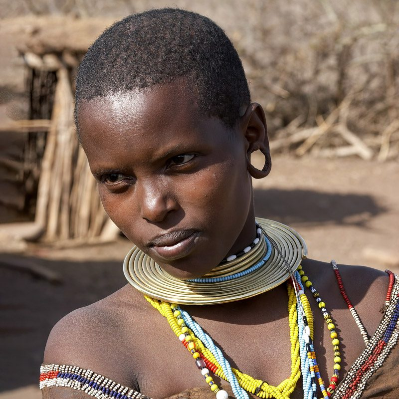
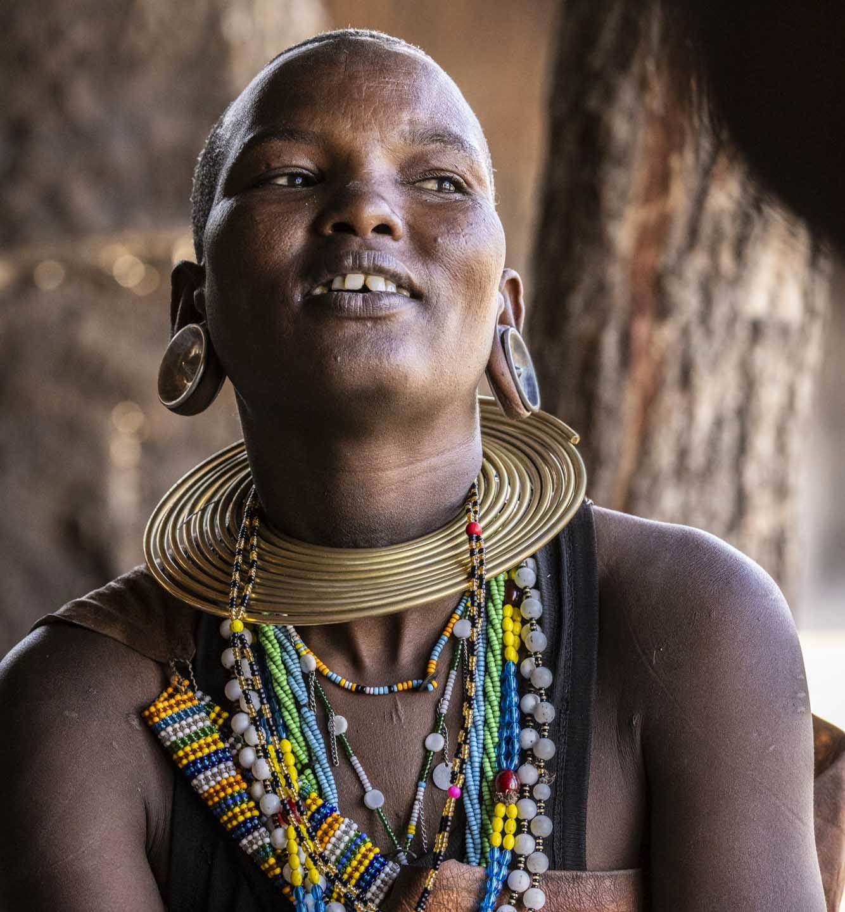
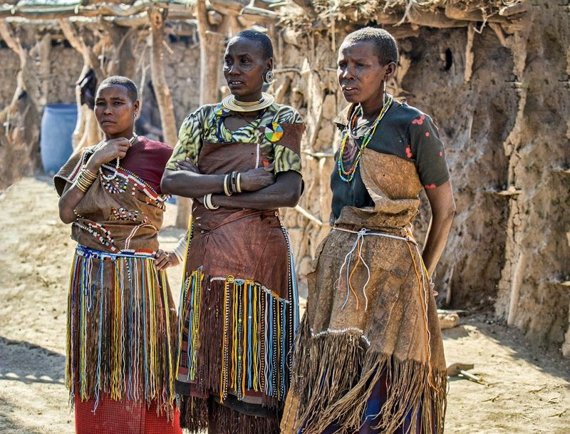
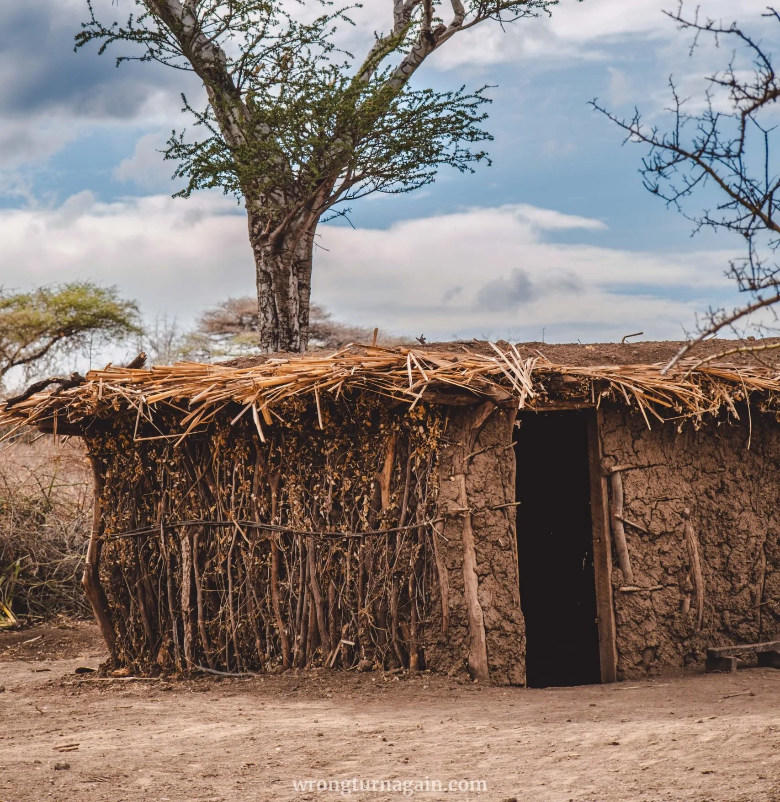
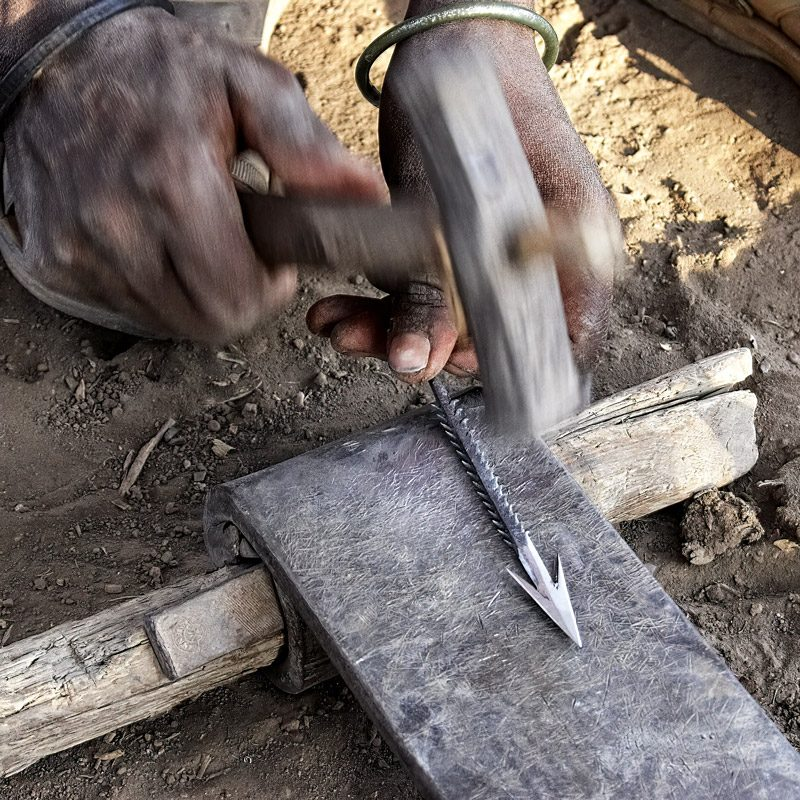
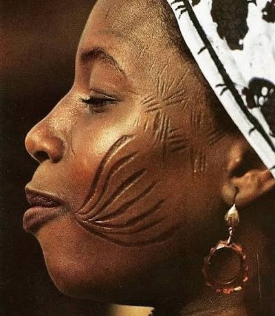
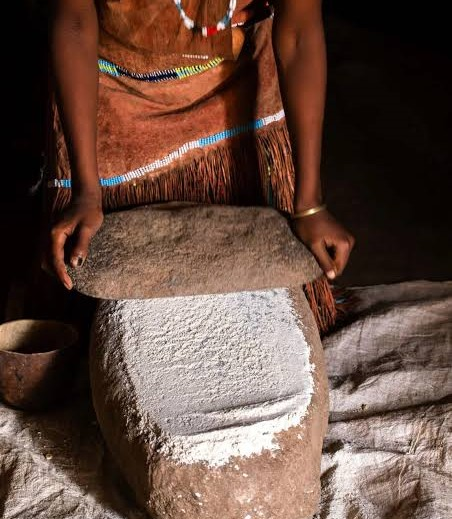

Step into the living heritage of the Datoga people, a highland Nilotic pastoral community of the Lake Eyasi and Ngorongoro region, known for pastoral traditions, distinctive homes, craftsmanship, and remarkable blacksmithing skills.
Explore DestinationsThe Datoga are highland Nilotic pastoralists associated with the southern Lake Eyasi Basin and the wider Ngorongoro-Lengai region. Their culture includes cattle, goat, sheep and donkey herding, traditional rectangular houses built from wood, twigs and mud, intricate beadwork, and a distinctive blacksmith tradition producing jewellery and tools.

Witness the striking sight of Datooga women adorned in heavy, polished brass neck rings, coiled armlets, and multi-layered disk earrings. You will hear these beautifully crafted metal pieces clink rhythmically during daily chores and community gatherings.

Observe women executing intensive, traditional leatherwork inside the compound. You will see how raw cow hides are scraped smooth with textured stones, heavily oiled with animal fats to soften the tissue, and tailored into multi-paneled skirts lined with glass trade beads.

Step inside a *Gidang'od* (family compound) to examine their unique architectural layout. You will explore low-profile, rectangular houses constructed from woven branches, packed mud, and cow dung, deliberately sectioned into clean interior sleeping spaces and protective nighttime calf pens.

Sit beside an open-air dirt forge to watch craftsmen melt brass and copper scrap over handmade bellows, shaping precise iron arrowheads used for trading with neighboring tribes.

Observe the iconic, concentric geometric tattoos carved around the eyes of Datooga women, paired beautifully with leather dresses decorated with elaborate glass beadwork.

Explore how this Nilotic community blends livestock herding with small-scale agriculture, using traditional stone tools to manually grind maize inside their mud-walled compounds.
From flamingo-filled alkaline shores and ancient groundwater forests to towering Rift Valley cliffs and lions resting above the floodplain, Datoga Village Lake compresses extraordinary wilderness into one unforgettable safari.
Don't leave your Datoga Village Lake experience to chance—co-design your safari alongside the travel architects at Arena Africa Safaris.